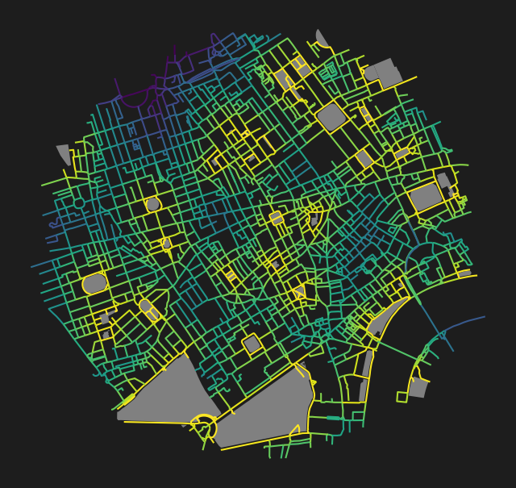

from cityseer.metrics import layers
from cityseer.tools import graphs, io
import matplotlib.pyplot as plt
from osmnx import featuresPark accessibility from OSM data
Calculate park accessibilities from OSM data.
This examples calculates park accessibility for London using OpenStreetMap Polygon data.
To start, follow the same approach as shown in the network examples to create the network.
lng, lat = -0.13396079424572427, 51.51371088849723
buffer = 1500
poly_wgs, epsg_code = io.buffered_point_poly(lng, lat, buffer)
G = io.osm_graph_from_poly(poly_wgs)
G_dual = graphs.nx_to_dual(G)
nodes_gdf, _edges_gdf, network_structure = io.network_structure_from_nx(G_dual)WARNING:cityseer.tools.io:Merging node 12450391665 into 25544116 due to identical x, y coords.
WARNING:cityseer.tools.io:Unable to parse level info: -`;-4
WARNING:cityseer.tools.io:Unable to parse level info: -`;-4
WARNING:cityseer.tools.io:Unable to parse level info: -`;-4
INFO:cityseer.tools.graphs:Generating interpolated edge geometries.
INFO:cityseer.tools.io:Converting networkX graph to CRS code 32630.
INFO:cityseer.tools.io:Processing node x, y coordinates.
INFO:cityseer.tools.io:Processing edge geom coordinates, if present.
INFO:cityseer.tools.graphs:Removing filler nodes.
INFO:cityseer.tools.util:Creating edges STR tree.
INFO:cityseer.tools.graphs:Removing filler nodes.
INFO:cityseer.tools.graphs:Removing dangling nodes.
INFO:cityseer.tools.graphs:Removing filler nodes.
INFO:cityseer.tools.util:Creating edges STR tree.
INFO:cityseer.tools.graphs:Splitting opposing edges.
INFO:cityseer.tools.graphs:Squashing opposing nodes
INFO:cityseer.tools.graphs:Merging parallel edges within buffer of 25.
INFO:cityseer.tools.util:Creating edges STR tree.
INFO:cityseer.tools.graphs:Splitting opposing edges.
INFO:cityseer.tools.graphs:Squashing opposing nodes
INFO:cityseer.tools.graphs:Merging parallel edges within buffer of 25.
INFO:cityseer.tools.util:Creating edges STR tree.
INFO:cityseer.tools.graphs:Splitting opposing edges.
INFO:cityseer.tools.graphs:Squashing opposing nodes
INFO:cityseer.tools.graphs:Merging parallel edges within buffer of 25.
INFO:cityseer.tools.util:Creating edges STR tree.
INFO:cityseer.tools.graphs:Splitting opposing edges.
INFO:cityseer.tools.graphs:Squashing opposing nodes
INFO:cityseer.tools.graphs:Merging parallel edges within buffer of 25.
INFO:cityseer.tools.util:Creating nodes STR tree
INFO:cityseer.tools.graphs:Consolidating nodes.
INFO:cityseer.tools.graphs:Merging parallel edges within buffer of 25.
INFO:cityseer.tools.graphs:Removing filler nodes.
INFO:cityseer.tools.util:Creating nodes STR tree
INFO:cityseer.tools.graphs:Consolidating nodes.
INFO:cityseer.tools.graphs:Merging parallel edges within buffer of 25.
INFO:cityseer.tools.graphs:Removing filler nodes.
INFO:cityseer.tools.util:Creating nodes STR tree
INFO:cityseer.tools.graphs:Consolidating nodes.
INFO:cityseer.tools.graphs:Merging parallel edges within buffer of 25.
INFO:cityseer.tools.graphs:Removing filler nodes.
INFO:cityseer.tools.util:Creating nodes STR tree
INFO:cityseer.tools.graphs:Consolidating nodes.
INFO:cityseer.tools.graphs:Merging parallel edges within buffer of 25.
INFO:cityseer.tools.graphs:Removing filler nodes.
INFO:cityseer.tools.util:Creating nodes STR tree
INFO:cityseer.tools.util:Creating edges STR tree.
INFO:cityseer.tools.graphs:Snapping gapped endings.
INFO:cityseer.tools.util:Creating edges STR tree.
INFO:cityseer.tools.graphs:Splitting opposing edges.
INFO:cityseer.tools.graphs:Merging parallel edges within buffer of 25.
INFO:cityseer.tools.graphs:Removing dangling nodes.
INFO:cityseer.tools.graphs:Removing filler nodes.
INFO:cityseer.tools.util:Creating edges STR tree.
INFO:cityseer.tools.graphs:Splitting opposing edges.
INFO:cityseer.tools.graphs:Squashing opposing nodes
INFO:cityseer.tools.graphs:Merging parallel edges within buffer of 25.
INFO:cityseer.tools.util:Creating nodes STR tree
INFO:cityseer.tools.graphs:Consolidating nodes.
INFO:cityseer.tools.graphs:Merging parallel edges within buffer of 25.
INFO:cityseer.tools.util:Creating edges STR tree.
INFO:cityseer.tools.graphs:Splitting opposing edges.
INFO:cityseer.tools.graphs:Squashing opposing nodes
INFO:cityseer.tools.graphs:Merging parallel edges within buffer of 25.
INFO:cityseer.tools.util:Creating nodes STR tree
INFO:cityseer.tools.graphs:Consolidating nodes.
INFO:cityseer.tools.graphs:Merging parallel edges within buffer of 25.
INFO:cityseer.tools.graphs:Removing filler nodes.
INFO:cityseer.tools.graphs:Merging parallel edges within buffer of 50.
INFO:cityseer.tools.graphs:Ironing edges.
INFO:cityseer.tools.graphs:Merging parallel edges within buffer of 1.
INFO:cityseer.tools.graphs:Removing dangling nodes.
INFO:cityseer.tools.graphs:Removing filler nodes.
INFO:cityseer.tools.graphs:Converting graph to dual.
INFO:cityseer.tools.graphs:Preparing dual nodes
INFO:cityseer.tools.graphs:Preparing dual edges (splitting and welding geoms)
INFO:cityseer.tools.io:Preparing node and edge arrays from networkX graph.
INFO:cityseer.graph:Edge R-tree built successfully with 6706 items.Prepare the parks GeoDataFrame by downloading the data from OpenStreetMap. The osmnx features_from_polygon works well for this purpose. In this instance, we are specifically targeting features that are labelled as a leisure type of park. You can use the same idea to extract other features or land use types.
It is important to convert the derivative GeoDataFrame to the same CRS as the network.
data_gdf = features.features_from_polygon(poly_wgs, tags={"leisure": ["park"]})
data_gdf = data_gdf.to_crs(nodes_gdf.crs)
# reset index
data_gdf = data_gdf.reset_index(level=0, drop=True)
data_gdf| geometry | GBV | barrier | leisure | name | wikidata | wikimedia_commons | wikipedia | access | opening_hours | ... | bottle | historic | loc_name | name:cy | name:zh | foot | name:ja | alt_name | type | surface | |
|---|---|---|---|---|---|---|---|---|---|---|---|---|---|---|---|---|---|---|---|---|---|
| id | |||||||||||||||||||||
| 5579381 | POLYGON ((699189.384 5709943.8, 699189.043 570... | NaN | NaN | park | NaN | NaN | NaN | NaN | NaN | NaN | ... | NaN | NaN | NaN | NaN | NaN | NaN | NaN | NaN | multipolygon | grass |
| 3241371 | POLYGON ((699470.032 5711728.944, 699463.775 5... | Active | fence | park | Russell Square | Q1346906 | Category:Russell_Square_Gardens | en:Russell Square | NaN | NaN | ... | NaN | NaN | NaN | NaN | NaN | NaN | NaN | NaN | NaN | NaN |
| 3241840 | POLYGON ((699136.323 5712190.801, 699139.55 57... | NaN | fence | park | Tavistock Square | Q1936696 | NaN | en:Tavistock Square | permissive | 07:30-sunset | ... | NaN | NaN | NaN | NaN | NaN | NaN | NaN | NaN | NaN | NaN |
| 4075108 | POLYGON ((700241.772 5711256.088, 700243.597 5... | NaN | NaN | park | Lincoln's Inn | Q69482 | NaN | en:Lincoln's Inn | NaN | NaN | ... | NaN | NaN | NaN | NaN | NaN | NaN | NaN | NaN | NaN | NaN |
| 4081049 | POLYGON ((697602.375 5710597.115, 697665.44 57... | NaN | NaN | park | Grosvenor Square | Q932992 | NaN | en:Grosvenor Square | yes | Mo-Su 07:30-dusk | ... | NaN | NaN | NaN | NaN | NaN | NaN | NaN | NaN | NaN | NaN |
| 4082589 | POLYGON ((699169.133 5710522.521, 699170.334 5... | NaN | NaN | park | Leicester Square | Q848912 | NaN | en:Leicester Square | NaN | NaN | ... | NaN | NaN | NaN | NaN | NaN | NaN | NaN | NaN | NaN | NaN |
| 4253286 | POLYGON ((699082.827 5711964.714, 699083.941 5... | NaN | fence | park | Woburn Square | Q8028979 | NaN | en:Woburn Square | NaN | NaN | ... | NaN | NaN | NaN | NaN | NaN | NaN | NaN | NaN | NaN | NaN |
| 4253288 | POLYGON ((698963.988 5712061.606, 698963.808 5... | NaN | fence | park | Gordon Square | Q5585854 | NaN | en:Gordon Square | NaN | NaN | ... | NaN | NaN | NaN | NaN | NaN | NaN | NaN | NaN | NaN | NaN |
| 4253646 | POLYGON ((699584.927 5711815.931, 699611.882 5... | Active | fence | park | Queen Square Gardens | Q3414013 | NaN | en:Queen Square, London | NaN | NaN | ... | NaN | NaN | NaN | NaN | NaN | NaN | NaN | NaN | NaN | NaN |
| 4253657 | POLYGON ((699910.437 5711532.233, 699874.943 5... | NaN | fence | park | Red Lion Square | Q7304535 | NaN | en:Red Lion Square | NaN | NaN | ... | NaN | NaN | NaN | NaN | NaN | NaN | NaN | NaN | NaN | NaN |
| 4253887 | POLYGON ((698115.449 5710348.292, 698119.405 5... | NaN | fence | park | Berkeley Square | Q127212 | NaN | en:Berkeley Square | yes | NaN | ... | NaN | NaN | NaN | NaN | NaN | NaN | NaN | NaN | NaN | NaN |
| 4253932 | POLYGON ((699870.898 5710562.893, 699873.608 5... | NaN | NaN | park | NaN | NaN | NaN | NaN | NaN | NaN | ... | NaN | NaN | NaN | NaN | NaN | NaN | NaN | NaN | NaN | NaN |
| 4254099 | POLYGON ((699716.747 5710187.296, 699727.176 5... | NaN | NaN | park | Victoria Embankment Gardens | Q7926695 | Category:Victoria_Embankment_Gardens | en:Victoria Embankment Gardens | yes | Jan 01-Feb 15 08:30-16:30,Feb 16-Feb 29 08:30-... | ... | NaN | NaN | NaN | NaN | NaN | NaN | NaN | NaN | NaN | NaN |
| 4256229 | POLYGON ((698615.632 5710615.991, 698633.72 57... | NaN | NaN | park | Golden Square | Q5579811 | NaN | en:Golden Square | NaN | NaN | ... | NaN | NaN | NaN | NaN | NaN | NaN | NaN | NaN | NaN | NaN |
| 4256950 | POLYGON ((699673.205 5710055.344, 699673.178 5... | NaN | NaN | park | Whitehall Garden | NaN | NaN | NaN | NaN | NaN | ... | NaN | NaN | NaN | NaN | NaN | NaN | NaN | NaN | NaN | NaN |
| 4256953 | POLYGON ((699632.625 5709861.45, 699609.71 570... | NaN | NaN | park | Whitehall Garden | Q18901051 | NaN | en:Privy Garden of the Palace of Whitehall | NaN | NaN | ... | NaN | NaN | NaN | NaN | NaN | NaN | NaN | NaN | NaN | NaN |
| 4272920 | POLYGON ((698780.057 5711434.937, 698778.086 5... | NaN | NaN | park | Crabtree Fields | NaN | NaN | NaN | NaN | NaN | ... | NaN | NaN | NaN | NaN | NaN | NaN | NaN | NaN | NaN | NaN |
| 4358458 | POLYGON ((698780.409 5710065.433, 698774.297 5... | NaN | NaN | park | St James's Square Gardens | Q500529 | NaN | en:St James's Square | permissive | Mo-Fr 10:00-16:30 | ... | NaN | NaN | NaN | NaN | NaN | NaN | NaN | NaN | NaN | NaN |
| 4373996 | POLYGON ((699943.843 5709744.706, 699930.88 57... | NaN | NaN | park | Jubilee Gardens | Q2290816 | NaN | NaN | permissive | 24/7 | ... | NaN | NaN | NaN | NaN | NaN | NaN | NaN | NaN | NaN | NaN |
| 4393572 | POLYGON ((699597.511 5711517.797, 699598.705 5... | NaN | fence | park | Bloomsbury Square Gardens | Q885408 | NaN | en:Bloomsbury Square | NaN | NaN | ... | NaN | NaN | NaN | NaN | NaN | NaN | NaN | NaN | NaN | NaN |
| 30131571 | POLYGON ((698717.644 5711636.424, 698722.347 5... | NaN | NaN | park | Whitfield Gardens | NaN | NaN | NaN | NaN | NaN | ... | NaN | NaN | NaN | NaN | NaN | NaN | NaN | NaN | NaN | NaN |
| 30613392 | POLYGON ((700001.375 5711083.483, 699989.142 5... | NaN | fence | park | Lincoln's Inn Fields | Q2736153 | NaN | en:Lincoln's Inn Fields | NaN | NaN | ... | NaN | NaN | NaN | NaN | NaN | NaN | NaN | NaN | NaN | NaN |
| 38310101 | POLYGON ((698169.651 5710815.626, 698174.877 5... | NaN | NaN | park | Hanover Square | Q3783111 | NaN | en:Hanover Square, Westminster | NaN | NaN | ... | NaN | NaN | NaN | NaN | NaN | NaN | NaN | NaN | NaN | NaN |
| 38318550 | POLYGON ((697694.563 5710327.204, 697699.041 5... | NaN | NaN | park | Mount Street Gardens | Q6923901 | NaN | en:Mount Street Gardens | NaN | Mo-Sa 08:00-17:00; Su,PH 09:00-17:00 | ... | NaN | NaN | NaN | NaN | NaN | NaN | NaN | NaN | NaN | NaN |
| 40879988 | POLYGON ((698941.172 5710700.987, 698972.984 5... | NaN | NaN | park | St Anne's Churchyard | Q18748717 | NaN | en:St Anne's Churchyard | NaN | week 1-13 Mo-Su 10:00-16:00; week 14-43 10:00-... | ... | NaN | NaN | NaN | NaN | NaN | NaN | NaN | NaN | NaN | NaN |
| 41117901 | POLYGON ((699231.843 5710970.608, 699225.581 5... | NaN | NaN | park | NaN | NaN | NaN | NaN | yes | NaN | ... | NaN | NaN | NaN | NaN | NaN | NaN | NaN | NaN | NaN | NaN |
| 55736532 | POLYGON ((699677.177 5712135.764, 699677.997 5... | NaN | NaN | park | Brunswick Square Gardens | Q4979544 | NaN | en:Brunswick Square | NaN | NaN | ... | NaN | NaN | NaN | NaN | NaN | NaN | NaN | NaN | NaN | NaN |
| 55737057 | POLYGON ((699889.676 5712020.139, 699885.9 571... | NaN | NaN | park | Coram's Fields | Q1131898 | Category:Coram's Fields | en:Coram's Fields | NaN | NaN | ... | no | NaN | NaN | NaN | NaN | NaN | NaN | NaN | NaN | NaN |
| 87079253 | POLYGON ((698284.966 5709536.508, 698293.537 5... | NaN | NaN | park | NaN | NaN | NaN | NaN | NaN | NaN | ... | NaN | NaN | NaN | NaN | NaN | NaN | NaN | NaN | NaN | NaN |
| 148004650 | POLYGON ((698126.464 5711132.172, 698126.288 5... | NaN | NaN | park | Cavendish Square | Q5055036 | NaN | en:Cavendish Square | NaN | NaN | ... | NaN | NaN | NaN | NaN | NaN | NaN | NaN | NaN | NaN | NaN |
| 154116823 | POLYGON ((697490.773 5711412.593, 697470.912 5... | NaN | NaN | park | Paddington Street Gardens South | Q15265011 | NaN | en:Paddington Street Gardens | NaN | NaN | ... | NaN | NaN | NaN | NaN | NaN | NaN | NaN | NaN | NaN | NaN |
| 161024051 | POLYGON ((700293.75 5710609.096, 700295.862 57... | NaN | fence | park | Victoria Embankment Gardens | NaN | NaN | NaN | NaN | NaN | ... | NaN | NaN | NaN | NaN | NaN | NaN | NaN | NaN | NaN | NaN |
| 368199014 | POLYGON ((698984.135 5711072.821, 698985.147 5... | NaN | fence | park | Soho Square Gardens | Q2705335 | Category:Soho_Square | en:Soho Square | NaN | NaN | ... | NaN | NaN | NaN | NaN | NaN | NaN | NaN | NaN | NaN | NaN |
| 374960368 | POLYGON ((698635.692 5709611.129, 698652.371 5... | NaN | NaN | park | St. James's Park | Q216914 | NaN | en:St James's Park | yes | Mo-Su 05:00-00:00 | ... | NaN | park | St. James's Park | Parc Iago Sant | 圣詹姆士公园 | NaN | NaN | NaN | NaN | NaN |
| 374969316 | POLYGON ((698857.167 5709732.666, 698824.199 5... | NaN | NaN | park | NaN | NaN | NaN | NaN | NaN | NaN | ... | NaN | NaN | NaN | NaN | NaN | yes | NaN | NaN | NaN | NaN |
| 383999575 | POLYGON ((698502.689 5711443.431, 698530.335 5... | NaN | NaN | park | Pearson Square | Q67199266 | NaN | NaN | NaN | NaN | ... | NaN | NaN | NaN | NaN | NaN | NaN | NaN | NaN | NaN | NaN |
| 747150853 | POLYGON ((698874.805 5711610.457, 698884.695 5... | NaN | NaN | park | Alfred Place Gardens | NaN | NaN | NaN | NaN | NaN | ... | NaN | NaN | NaN | NaN | NaN | NaN | NaN | NaN | NaN | NaN |
| 803099035 | POLYGON ((699279.695 5712391.179, 699278.264 5... | NaN | NaN | park | Cartwright Gardens | Q19600673 | NaN | en:Cartwright Gardens | NaN | NaN | ... | NaN | NaN | NaN | NaN | NaN | NaN | カートライト・ガーデンズ | NaN | NaN | NaN |
| 863554956 | POLYGON ((698548.21 5709661.801, 698533.411 57... | NaN | NaN | park | The Green Park | Q119892 | NaN | en:Green Park | NaN | NaN | ... | NaN | park | NaN | NaN | 绿园 | NaN | NaN | Green Park | NaN | NaN |
| 1066129483 | POLYGON ((697725.772 5710203.851, 697729.543 5... | NaN | NaN | park | NaN | NaN | NaN | NaN | NaN | NaN | ... | NaN | NaN | NaN | NaN | NaN | NaN | NaN | NaN | NaN | NaN |
| 1098763494 | POLYGON ((698632.144 5711655.736, 698650.639 5... | NaN | NaN | park | The Poets' Park | NaN | NaN | NaN | NaN | NaN | ... | NaN | NaN | NaN | NaN | NaN | NaN | NaN | NaN | NaN | NaN |
41 rows × 50 columns
Once the data has been prepared, use the layers.compute_accessibilities method to compute accessibilities. The landuse_column_label and the target accessibility keys should correspond to the data in the input GeoDataFrame. Use the max_netw_assign_dist parameter to configurethe distance for network assignment.
# compute pub accessibility
distances = [100, 200, 400, 800]
nodes_gdf, data_gdf = layers.compute_accessibilities(
data_gdf,
landuse_column_label="leisure",
accessibility_keys=["park"],
nodes_gdf=nodes_gdf,
network_structure=network_structure,
distances=distances,
)INFO:cityseer.metrics.layers:Computing land-use accessibility for: park
INFO:cityseer.metrics.layers:Assigning data to network.
INFO:cityseer.data:Assigning 41 data entries to network nodes (max_dist: 100).
INFO:cityseer.data:Collected 325 potential node assignments from data entries.
INFO:cityseer.data:Finished assigning data. 325 assignments added to 306 nodes.
INFO:cityseer.graph:Barriers unset and R-tree cleared.
INFO:cityseer.config:Metrics computed for:
INFO:cityseer.config:Distance: 100m, Beta: 0.04, Walking Time: 1.25 minutes.
INFO:cityseer.config:Distance: 200m, Beta: 0.02, Walking Time: 2.5 minutes.
INFO:cityseer.config:Distance: 400m, Beta: 0.01, Walking Time: 5.0 minutes.
INFO:cityseer.config:Distance: 800m, Beta: 0.005, Walking Time: 10.0 minutes.The output columns are named cc_{key}_{distance}_{type}. Where the keys will correspond to the input accessibility keys and the distances will correspond to the input distances. The types will correspond to either non-weighted nw or distance weighted wt count, or else the distance to the nearest instance of a given landuse.
Standard GeoPandas functionality can be used to explore, visualise, or save the results.
nodes_gdf.columnsIndex(['ns_node_idx', 'x', 'y', 'live', 'weight', 'primal_edge',
'primal_edge_node_a', 'primal_edge_node_b', 'primal_edge_idx',
'dual_node', 'cc_park_100_nw', 'cc_park_100_wt', 'cc_park_200_nw',
'cc_park_200_wt', 'cc_park_400_nw', 'cc_park_400_wt', 'cc_park_800_nw',
'cc_park_800_wt', 'cc_park_nearest_max_800'],
dtype='object')fig, ax = plt.subplots(1, 1, figsize=(8, 8), facecolor="#1d1d1d")
nodes_gdf.plot(
column="cc_park_nearest_max_800",
cmap="viridis_r",
legend=False,
ax=ax,
)
data_gdf.plot(
markersize=2,
edgecolor=None,
color="grey",
legend=False,
ax=ax,
)
ax.axis(False)(np.float64(697035.8123208123),
np.float64(700647.6928482385),
np.float64(5709138.304744158),
np.float64(5712549.39964246))